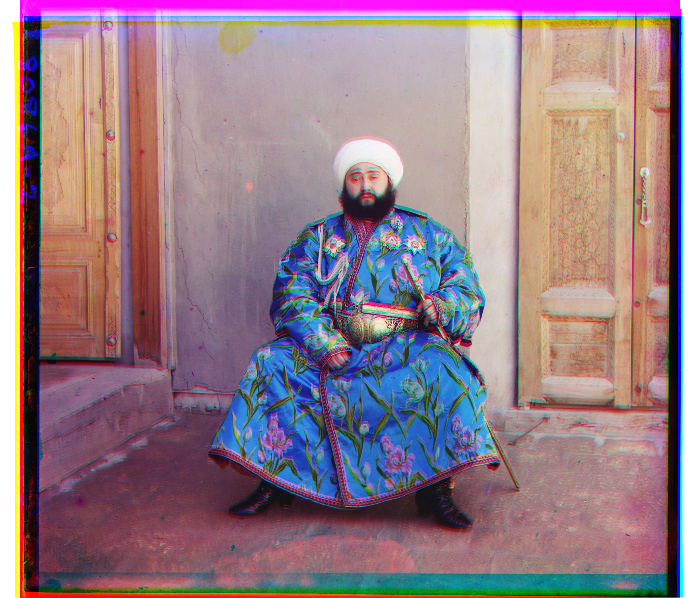

This project reconstructs Sergei Prokudin-Gorskii’s early 20th-century color photographs, which were captured as three separate glass plate exposures (blue, green, and red). The algorithm produces sharp, full-color reconstructions of scenes from the Russian Empire, bringing century-old photographs back to life.
Algorithm
First, the image is read in grayscale, converted to float64, and the pixel values are normalized to the range [0,1]. The height of the image is then divided by three which is then used to separate it into its blue, green, and red components. The green and red channels are subsequently aligned to the blue channel.
Alignment begins with preprocessing. I found images like emir.tif particularly challenging to align because the intensity values across channels differed so much. To address this, I implemented an edge-based method instead of relying solely on raw pixel intensities. When the Sobel flag is enabled, a Sobel edge detector computes the gradient magnitude, and alignment is performed on these edge maps. With the Sobel flag enabled, I was able to accurately align all of the images. This approach proved far more effective and is discussed further in the Bells & Whistles section below.
The actual alignment is handled with an image pyramid. The images are recursively downsampled (to depth 2 for .jpg and depth 5 for .tif images), and alignment is first estimated at the coarsest scale. At each level, one image is shifted within a search window, and a scoring function evaluates the alignment quality. Each image is cropped by about 10% (an empirically chosen value to remove noisy borders) before a score is calculated. I implemented both Euclidean distance and Normalized Cross-Correlation as scoring metrics, though I opted to use Euclidean distance. After offsets are found at a coarse scale, they are doubled when passed to the next finer scale, where the search is repeated in the same range around those offsets. The coarse-to-fine image pyramid approach makes alignment efficient for both large files (.tif) and smaller files (.jpg), significantly reducing computation time while maintaining accuracy.
Finally, once the green and red channels are aligned to the blue, the three channels are stacked to form an RGB image, producing a crisp, full-color reconstruction.
Results (on the provided images)
cathedral.jpg
Green offset: (2, 5)
Red offset: (3, 12)
church.tif
Green offset: (4, 25)
Red offset: (-4, 58)
emir.tif
Green offset: (23, 49)
Red offset: (40, 107)
harvester.tif
Green offset: (17, 60)
Red offset: (14, 124)
icon.tif
Green offset: (17, 42)
Red offset: (23, 90)
italil.tif
Green offset: (22, 38)
Red offset: (36, 77)
lastochikino.tif
Green offset: (-2, -3)
Red offset: (-8, 76)
lugano.tif
Green offset: (-17, 41)
Red offset: (-29, 791)
melons.tif
Green offset: (10, 80)
Red offset: (12, 177)
monastery.jpg
Green offset: (2, -3)
Red offset: (2, 3)
self_portrait.tif
Green offset: (28, 77)
Red offset: (37, 176)
siren.jpg
Green offset: (-7, 49)
Red offset: (-24, 96)
three_generations.tif
Green offset: (12, 54)
Red offset: (8, 111)
tobolsk.tif
Green offset: (2, 3)
Red offset: (3, 6)
Results (on images of my choosing)
flowers.tif
Green offset: (-7, 49)
Red offset: (-24, 96)
navy.tif
Green offset: (19, 20)
Red offset: (30, 57)
rainbow.tif
Green offset: (-1, 13)
Red offset: (-1, 79)
Bells & Whistles (Extra Credit)
For some images, aligning channels based on raw pixel intensities is simply not enough. A key challenge is that the brightness values across the color channels can vary significantly. For example, in the emir.tif image, the subject's vibrant clothing is bright in the blue channel but dark in the red channel. A simple comparison of these intensity values would fail to produce an accurate alignment.
To overcome this, I implemented a more robust alignment metric using a Sobel edge detector. The core idea is to align the images based on their structural features rather than their brightness. Edges are far more likely to be consistent across the R, G, and B channels.
My implementation first applies the Sobel edge detector to each channel to compute the gradient magnitude. This effectively creates a map of the prominent edges in each image. The pyramid alignment algorithm then uses these edge maps instead of the original pixel intensities as the basis for comparison. As seen in the results for emir.tif, this method is highly effective, producing a dramatically sharper and more accurate alignment where the intensity-based approach fails.

emir.tif aligned using pixel intensitiesemir.tif aligned using edges
Conclusion
This project demonstrates how modern image processing techniques can revive historical photographs with remarkable clarity. By combining pyramid alignment with edge-based matching, the once monochrome Prokudin-Gorskii glass plate negatives were reconstructed into vibrant, full-color images. The results highlight both the technical effectiveness of the methods and the cultural value of bringing these century-old scenes back to life.